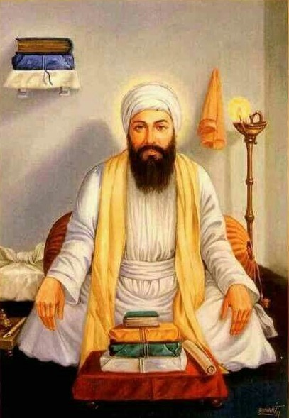

Guru Angad Dev Ji

Guru Angad Dev Ji, originally known as Bhai Lehna Ji, was born in 1504 AD. Before
becoming the second Sikh Guru, Bhai Lehna Ji led a comfortable life as a trader, devoted
to Hinduism. However, feeling spiritually unfulfilled, Bhai Lehna Ji encountered a Sikh
singing Guru Nanak Dev Ji's hymn and was drawn to it. This led to a transformative
meeting with Guru Nanak Dev Ji, where Bhai Lehna Ji renounced his previous practices and
embraced Sikhi. He devoted himself to serving Guru Nanak Dev Ji selflessly, symbolized
by instances where he readily performed menial tasks without hesitation. Guru Nanak Dev
Ji recognized Bhai Lehna Ji's unwavering dedication and, after seven years of service,
bestowed upon him the name Angad, signifying being a limb of the Guru, and passed on the
Guruship. Guru Angad Dev Ji further developed the Gurmukhi script, establishing it as
the script for Sikhi. This enabled wider accessibility to Sikh teachings and scripture.
He also emphasized equality between men and women, welcoming women into the Sikh community
and advocating for their rights, which was progressive for that era. Throughout his life,
Guru Angad Dev Ji contributed significantly to Sikhi's growth, nurturing it during its
formative years after Guru Nanak Dev Ji. His teachings, emphasis on education, physical
fitness, and inclusivity laid the foundation for Sikhi to flourish under subsequent
Gurus. Guru Angad Dev Ji passed away in 1552 AD, leaving behind a legacy of inclusivity,
education, and service to humanity.